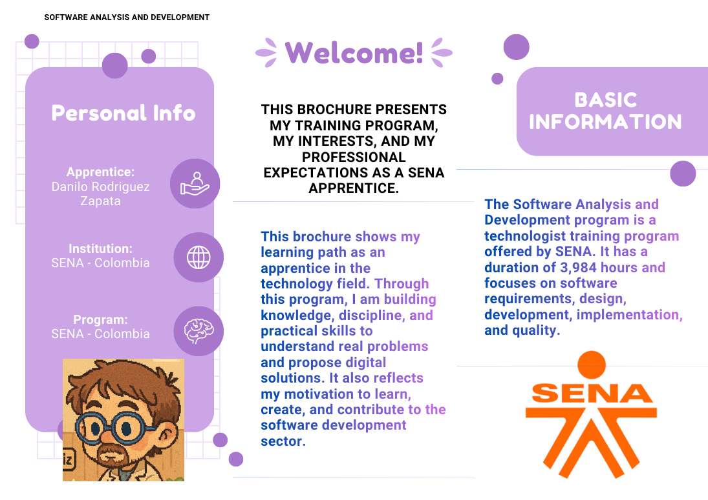
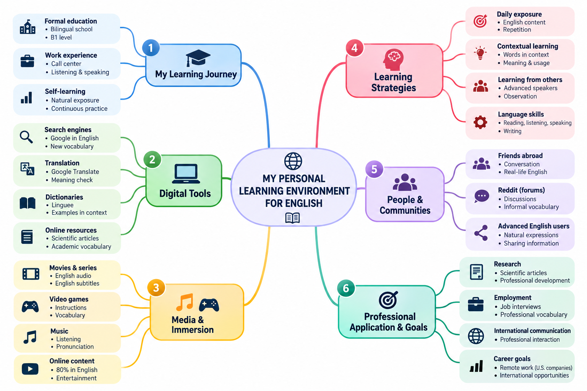

🎥
AvailableGA1-240202501-AA1-EV02
Video Presentation
My first audiovisual evidence focuses on introducing information in English and practicing oral communication in a structured presentation.
A multimedia portfolio that documents my English learning process through speaking, writing, professional communication, critical reflection and technology.
This portfolio connects my English training with software development, analytical thinking and professional communication.
My name is Danilo Esteban Rodríguez Zapata. I am a SENA learner in the Software Analysis and Development program. I am interested in technology, data, software, research and continuous learning. For me, English is a practical tool for accessing knowledge, documentation and international professional opportunities.
This public portfolio intentionally excludes my government ID number and personal phone number. The academic information needed to identify my learning process is included without exposing unnecessary sensitive data.
The portfolio follows the same progression as my SENA English evidence: personal communication, professional interaction, reflection and autonomous learning.
Videos are embedded from YouTube. The PDF, documents, audio and mind map are included directly in this website package, so they remain available when the site is published.
My first audiovisual evidence focuses on introducing information in English and practicing oral communication in a structured presentation.
This brochure presents my training program, my learning path, the topics I have studied and my professional expectations as a SENA apprentice.

The brochure explains the Software Analysis and Development program and highlights my goal of improving programming, problem-solving, communication and analytical skills.
This activity simulates a job interview and develops the ability to answer professional questions, interact orally and communicate personal strengths in English.
Carl Gustav Jung: A Journey Into the Human Mind is a chronicle about Jung's life, his professional development and ideas such as analytical psychology, archetypes, introversion and extraversion.
This audiovisual evidence develops descriptive language and oral presentation skills through the presentation of a tourist destination.
I wrote a professional email to apply for a Junior Software Developer position. The document connects my SENA training with programming, databases, web development, teamwork and professional responsibility.
In this audio I reflect on responsibility, curiosity, discipline, technology, English, academic obligations, professional work and daily-life responsibilities.
My forum participation connects environmental responsibility with technology, digital transformation, organizational incentives and employee participation.
My PLE organizes the people, tools, media, strategies and professional goals that support my independent English learning.

This website is the final integration evidence. It consolidates my videos, written productions, audio, forum participation and Personal Learning Environment in one accessible digital portfolio.
These reflections extend the portfolio beyond individual assignments and connect English with critical digital citizenship.
Digital environments give us access to an enormous amount of information, but access is not the same as understanding. Critical thinking means checking the source, date, evidence and possible bias before accepting a claim.
For software and technology professionals, media literacy is especially relevant because algorithms, artificial intelligence and social platforms can amplify both useful knowledge and misinformation.
Cybercrime includes behaviors such as phishing, identity theft, unauthorized access and misuse of information. These actions can affect individuals, companies and public institutions.
As technology becomes part of almost every activity, software professionals have a responsibility to develop safer systems, protect data and make ethical decisions.
“Learning English is not only about grammar or vocabulary. It is also about becoming more confident when communicating, understanding different contexts and developing skills that support my professional growth.”
Throughout these activities, I have used English for personal presentations, professional communication, academic writing, interviews, reflection, sustainability and autonomous learning.
My goal is to continue using English as a practical tool for software development, research, technology and international professional opportunities.